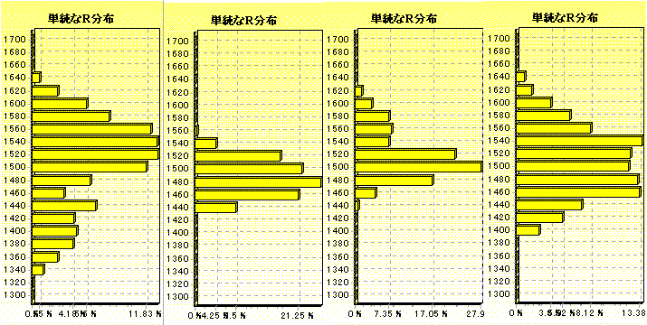
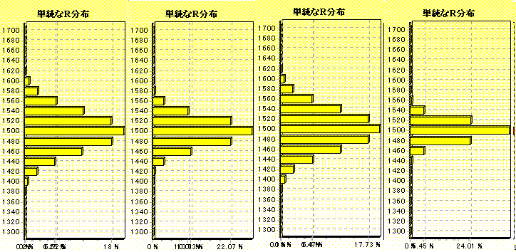

2001/1/16 とつげき東北
今まで何度かデータに出してきた通り、「Ｒシステム」のばらつきが大きすぎるぞ〜mjman！(笑)
せっかくよくできたシステムなので、実力をもう少し細かく表せるように改良案を提出する( ≧∇≦)ﾌﾞﾊﾊﾊ!
ちなみに今のシステムだと「Ｒ1900」の人と「Ｒ2000」の人の実力差って、50％ちょっとでしか信頼できない(笑)。
新しい「高信頼Ｒシステム」を、基本形は今のままに、どうすれば「実力を表すようになるか」を、安定Ｒによって得られる「実力」の指標を元に考える(笑)。
いや、別にこうしろと言うわけでなくて、お遊び＆参考にだがね(笑)。
安定Ｒ：「それまでの麻雀の成績が以後も出続けると仮定した時、収束していくＲ値」の理論値
データ：
10000試合のＲ分布例 800試合のＲ分布例 2000試合のＲ分布例 5000試合のＲ分布例

さてこれは、ある試合数を「安定Ｒ1500」の人が打ってみた場合のみかけのＲの分布の状況です。
ごらんのように、10000試合などの期間でも、「みかけのＲ」で実力を判断することは困難です。
例えば5000試合目以降、200試合ごとに「みかけのＲ」を見て、５回の観測値の平均から安定Ｒを算出したところ「Ｒ1432」でした。
（ちょうど、「あの人はここ1000試合くらい、ずっとＲ1430だから実力も1400ちょいだろう」という判断と同じです）
300万試合のＲ分布 800試合安定Ｒの分布 2000試合安定Ｒの分布 5000試合安定Ｒの分布

（各安定Ｒのデータ数は10000）
一方、極めて長期のデータ（300万試合）を見続けることで、当人の実力を知ることはできます（一番左）。
しかしそれも、安定Ｒによる判断を超えるようなことは期待できません（右３つが「安定Ｒ」の分布）。
2000試合、5000試合と増やすことで、安定Ｒはほぼ実力通りの値を出すようになるのに対し、みかけのＲはいつまで打ち続けても誤差が減りません。
新Ｒシステム提案：
では、もしＲ変動の方式が変わればどうなるかを実験してみます。
変動全体1/2 変動全体Ｒ変動1/4 他家Ｒ補正２倍 順位基準1/2、他家Ｒ補正２倍
（各々、300万試合の間のＲ分布）
見ての通り、Ｒの変動幅が現在の４分の１になれば、Ｒの分布は「2000試合安定Ｒ分布」とほぼ等しくなります。
しかし、Ｒの変動がそんなに小さくなると、ちょっとやる気が起きないという人もいるでしょう(笑)。
そこで、Ｒの変動自体はそれほど変化させることなく、みかけのＲが信頼に値する指標になる方法を考えてみます。
Ｒの変動には「順位」と「自分と他家のＲ差」が大きく関わっていますが、このうち「Ｒ差」の方をいじるとどうなるでしょうか。
上の図の３番目がそれです。「他家Ｒ補正」を重視（２倍）することで、非常にばらつきの多い「順位による変動」分が相殺され、Ｒの変動幅を半分にした場合とほぼ同じ信頼度を得ることができます（しかもＲの変動は小さくなりません）。
また上の図の一番右は、さらに加えて「順位」での変動を半分にした場合です。
こうなると、「みかけのＲ」は、なんと5000試合分の結果と同程度の分布になり、これだと「非常に信頼できる実力の指標」と言えるでしょう。
Ｒシステムは非常によくできたシステムだとは思いますが、安定後のばらつきの大きさが、「みかけのＲ」が信頼に足りない指標である原因となっています。みかけのＲが大きく変動するので、「他家のＲ」による補正もまた、他家がたまたま実力より高いＲにいるかどうかで偶然性が入り込みます。
上の図の一番右で示した「順位基準による変動1/2・他家Ｒ差による変動２倍」にすれば、Ｒの変動幅自体はさほど小さくすることなく、みかけのＲの信頼度を格段に上昇させることができます。いわゆる「向心力」が大きく働くということで、偶然、他家のＲが実力より大きく離れている可能性も小さくなり、ますます信頼度は上がると思われます。
問題点：
問題点は、「Ｒ〜〜以上」の制限を課す卓における「Ｒの合計値」が、ワイ卓から来て記念打ちで負けていく存在によって増大し、当該卓の実力に対するＲ平均が他の卓のそれより上昇してしまうことです（通常、高レベル卓で勝てる人はそこに残り、負ける人は来なくなると考えると、高度な卓の平均Ｒが徐々に上昇することは理解されることです）。
ただし、現在のシステムでもそれは既に起こっており（最上卓ができてから３ヶ月ごとの他家平均Ｒを計測すると、ほぼ10ずつ上昇しています。また第三の高度な卓では平均Ｒが異様に高い。これらの間に「実力の大きな隔たり」があるとは考えがたい）、「どの卓でも結局偶然で左右される、±120もの誤差を出す指標」であるよりは、「ある卓の内部においては±40程度で信頼できる指標」である方が有用であると思われます。
また、あまりにも他家平均Ｒと自分のＲとが離れてしまうと、
以上は、「平均順位とＲの関係」の論文に示した、Ｒ変動の式及び安定Ｒの式に基づいています。
麻雀の「強さ」を、一目見て正確に判断する定量的で正確な方法はこれまで一つもありませんでした。
Ｒシステムは、それに果敢に挑戦して一定の成果を上げた偉大な方法です。
しかし、麻雀ゲームの持つ偶然性を必然的に内包し、例えば最上卓で他人の「強さ」を知ろうとしても、結局打ち方から漠然と判断したり、名前が通っているからと判断したりするしかなかったと思います。
「500試合の間2100ある」からと言ってその人の実力が2100を超えていると判断するのは、あまりにも危険と言わざるを得ないのが現状です。
「安定Ｒ」は、これに対して「正確さ」を求めた指標ですが、長期データを必要としました。